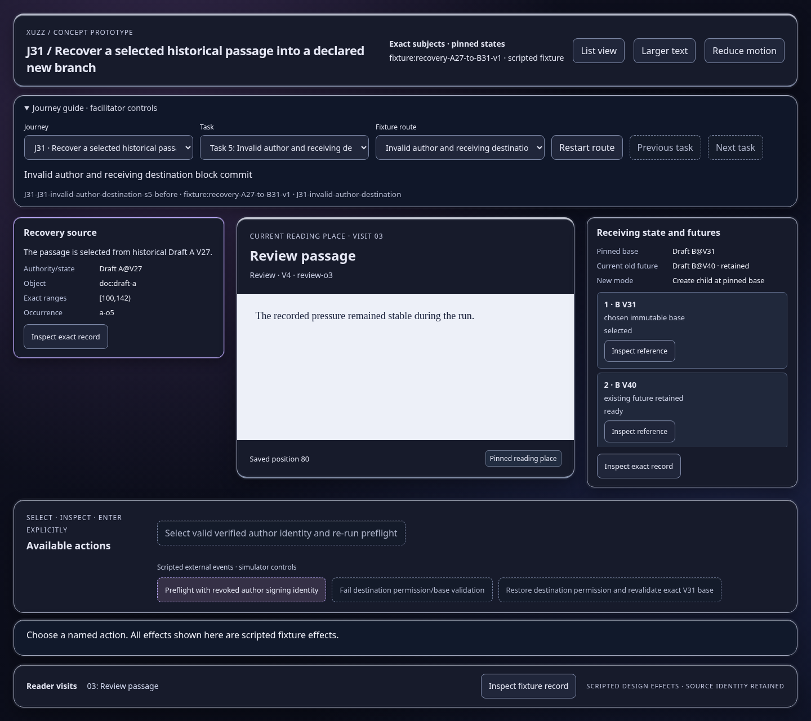
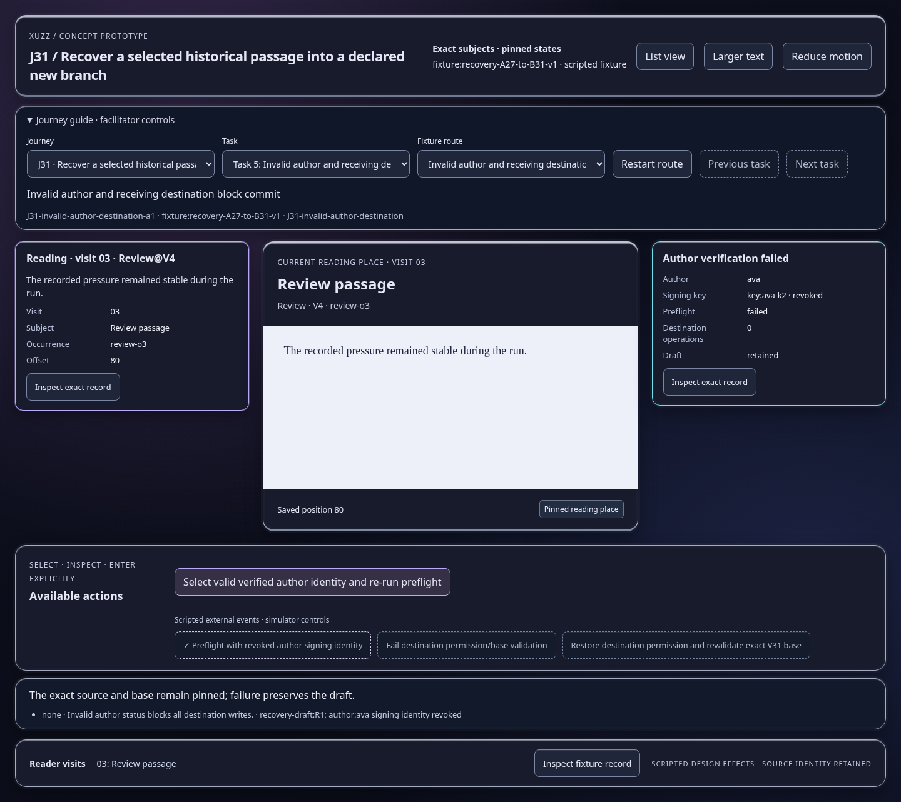
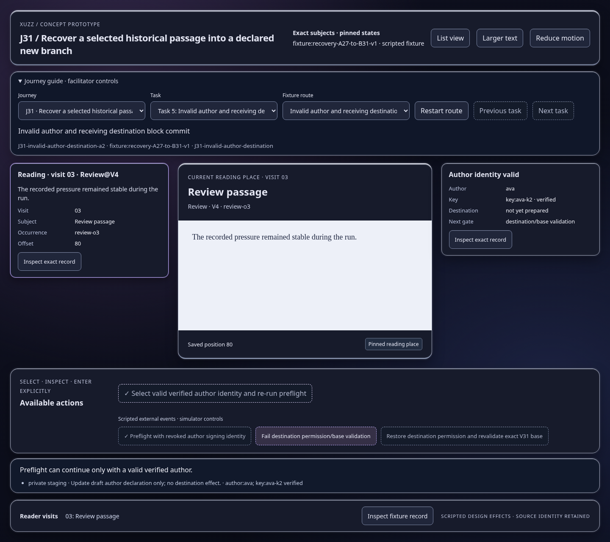
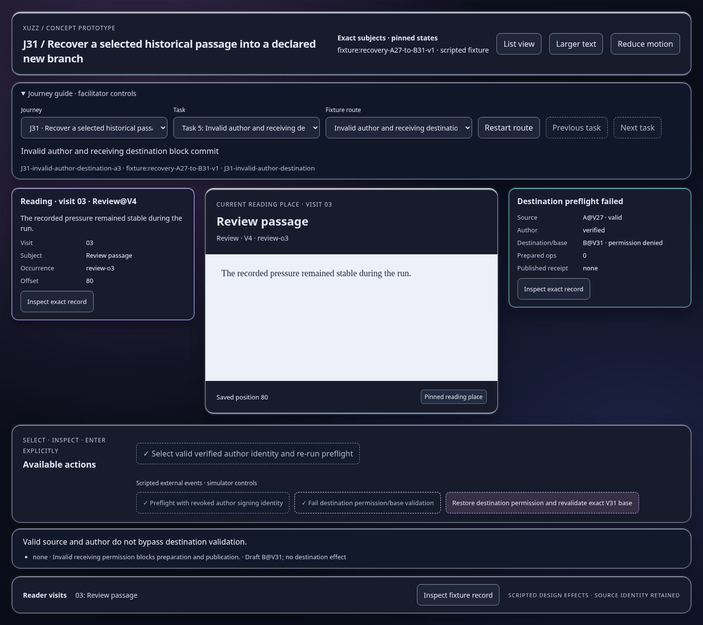
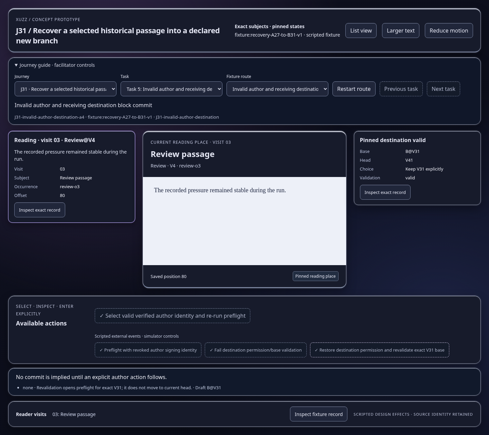

Scripted concept states; inspect the effect and identity trace. Images show actual prototype rendering.

The exact source and base remain pinned; failure preserves the draft.
Open this represented state
Preflight can continue only with a valid verified author.
Open this represented state
Valid source and author do not bypass destination validation.
Open this represented state
No commit is implied until an explicit author action follows.
Open this represented state